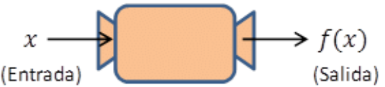
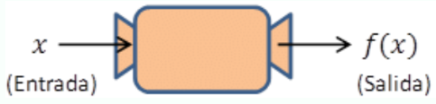
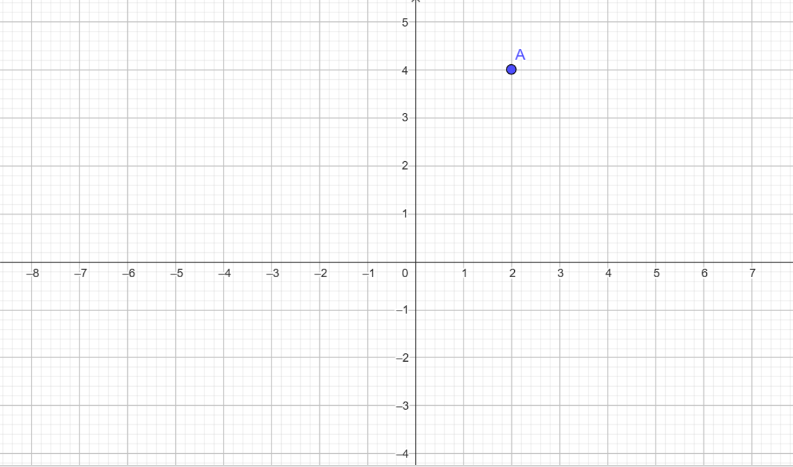
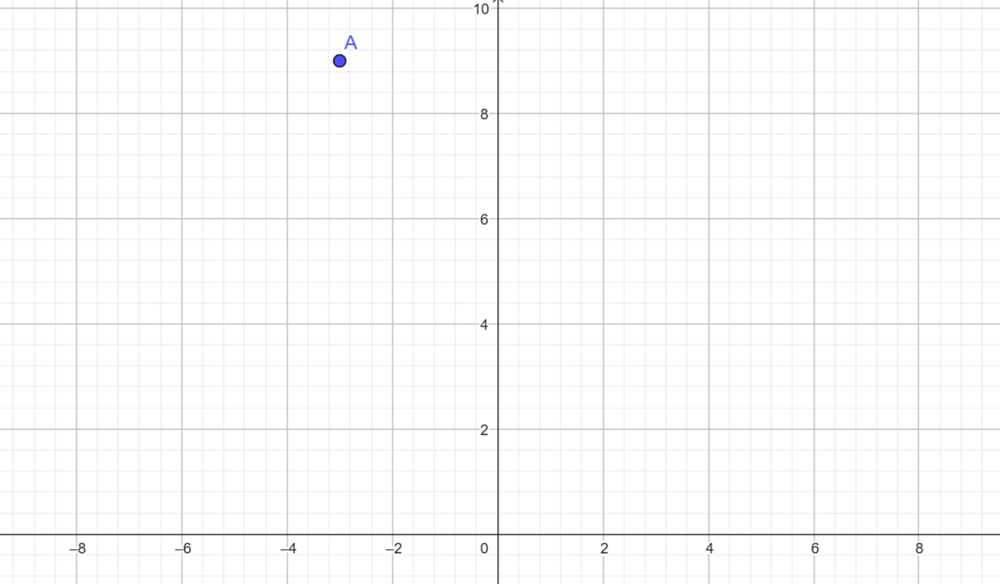
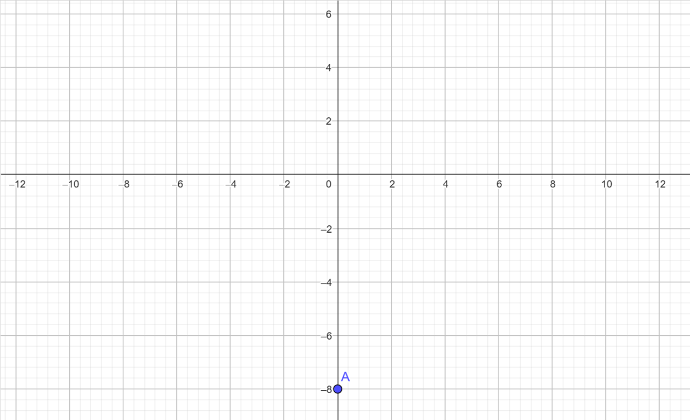
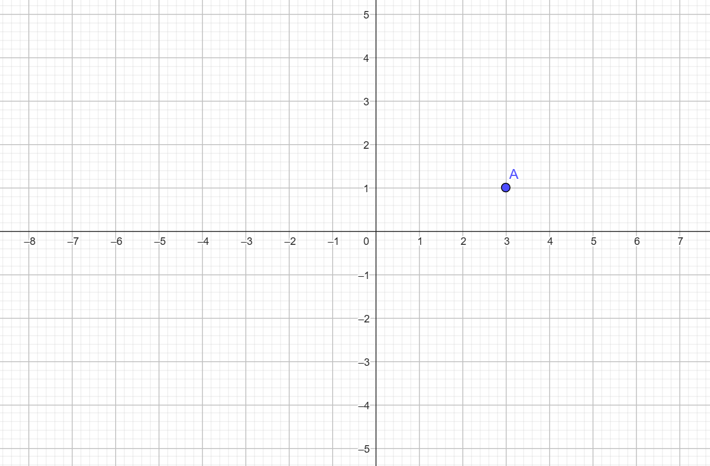
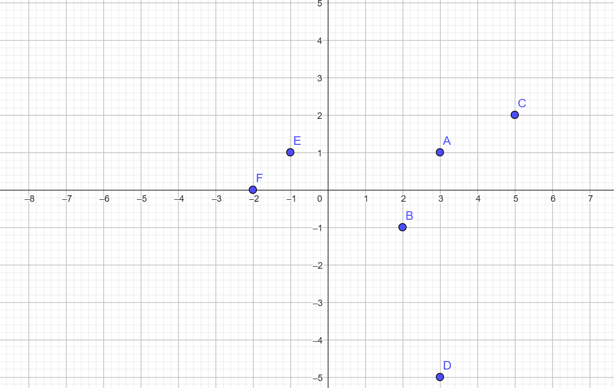

Echemos un poco de imaginación...
Para entender qué es una función, vamos a tirar un poco de la imaginación.
Imaginemos una máquina que dispone de una entrada y una salida, y que en su interior realiza alguna función, como la siguiente:

Por ejemplo, esta puede ser una máquina a la que le metemos en la entrada dos iPhone 15 Pro y te devuelve a la salida 10 iPhone 15 Pro (¿ojalá tener esa máquina, verdad? 😉).
¿Qué estaría haciendo internamente esta máquina, es decir, cual es su función? Podemos pensar que está sumando 8 iPhones a nuestra entrada, o también podría estar multiplicándolos por 5, ¿no?
Probemos a meter 5 iPhones en lugar de 2, ahora la máquina nos devuelve 25 iPhones (me voy a hacer millonario como siga así).
¿Podemos saber ya qué está haciendo exactamente la máquina? Ahora sí podemos confirmar que la máquina está multiplicando por 5 el número de iPhones que le metemos a la entrada.
Esta máquina lo que hace es multiplicar por 5 cualquier cosa que le metamos a la entrada, hasta los números, es decir, si le metemos un -3 nos va a devolver un -15 (-3*5 = -15).
Es decir, la función de la máquina es la siguiente:
Salida = 5 * Entrada
Donde vemos que hemos definido la función con una fórmula.
Queda muy feo escribir "Salida" y "Entrada", ¿cómo expresamos esto matemáticamente de forma correcta? Utilizando variables, es decir, letras.
A la entrada de la máquina se le suele denotar con la variable 'x' y a la salida con la variable 'y' , por lo que la máquina anterior quedaría definida como:
y = 5x
Esto es solo un ejemplo de máquina, pero máquinas existen infinitas:
- Una máquina que me divida entre 2 (genial para compartir una pizza): y = x/2
- Una máquina que multiplique por 3 y reste 8: y = 3x - 8
- Una máquina que no haga nada (la inútil): y = x
- Y así habría infinitas posibilidades.
Hasta aquí espero que hayas comprendido la idea intuitiva de qué es una función.
Un poco de rigor matemático...
Ahora vamos a expresar todo esto de forma rigurosa matemáticamente:
- Al valor que insertamos en la entrada lo vamos a denotar por la variable 'x'.
- A la máquina vamos a llamarla f (adivina por qué... porque la máquina es la función, y f es su primera letra..., madre mía cuanta imaginación estos matemáticos...).
- Y al valor que nos devuelve lo vamos a denotar por la variable 'y', aunque también se suele utilizar la notación f(x), qué representa lo que devuelve la función 'f' al insertarle 'x'. Esto se lee "f de x", y 'x' porque la entrada es la variable 'x', si fuera otra variable, por ejemplo 't', la máquina (la función) se llamaría f(t).
Por tanto, la expresión más usual de una función es de la forma f(x) = "expresión que depende de x" (como los ejemplos que acabamos de ver anteriormente).
- Cada par (entrada, salida) se representa de la forma (x,y), lo que representa un punto en el plano.

CONCEPTO: Imagen de una función en un punto
La salida que produce la función ante una entrada, es decir, el valor 'y' que devuelve la función al insertarle un valor de 'x', se denomina IMAGEN DE LA FUNCIÓN EN UN PUNTO, es decir, la variable 'y' representa la imagen de la función para un valor de 'x'.
Sin ejemplos no me entero profe
Veamos algunos ejemplos para repasar todo lo que acabamos de ver, que sé que es mucho:
1. Dada la función f(x) = x2, calcula la imagen de f para:
a) Para x = 2.
Esto significa que en la entrada de la función metemos un x=2, y la función lo que realiza es elevarlo al cuadrado, por lo que a la salida va a devolver... un y=4. Matemáticamente, la imagen de la función f(x) = x2 en el punto x=2 es y=4, y se representa como (2,4), representando el siguiente punto en el plano:

Autoría: Óscar Gómez Palomares. ©
b) Para x = -3.
Esto significa que en la entrada de la función metemos un x=-3, y la función lo que realiza es elevarlo al cuadrado, por lo que a la salida va a devolver... un y=9. Matemáticamente, la imagen de la función f(x) = x2 en el punto x=-3 es y=9, y se representa como (-3,9), representando el siguiente punto en el plano:

Autoría: Óscar Gómez Palomares. ©
2. Dada la función f(x) = 3x - 8, calcula la imagen de f para:
a) Para x = 0.
Esto significa que en la entrada de la función metemos un x=0, y la función lo que realiza es multiplicarlo por 3 y restarle 8, por lo que a la salida va a devolver... un y=-8. Matemáticamente, la imagen de la función f(x) = 3x-8 en el punto x=0 es y=-8, y se representa como (0,-8), representando el siguiente punto en el plano:

Autoría: Óscar Gómez Palomares. ©
a) Para x = 3.
Esto significa que en la entrada de la función metemos un x=3, y la función lo que realiza es multiplicarlo por 3 y restarle 8, por lo que a la salida va a devolver... un y=1. Matemáticamente, la imagen de la función f(x) = 3x-8 en el punto x=3 es y=1, y se representa como (3,1), representando el siguiente punto en el plano:

Autoría: Óscar Gómez Palomares. ©
CONCEPTO: Variable dependiente e independiente
Otro concepto importante es el siguiente:
- A la variable 'y' (salida) se le suele llamar variable dependiente. ¿Adivinas por qué? Porque DEPENDE del valor de la entrada, es decir, dependiendo del valor que le demos a la 'x', la 'y' valdrá un valor u otro.
- A la variable 'x' (entrada) se le suele llamar variable independiente. ¿Adivinas por qué? Porque NO DEPENDE de nadie, puede tomar cualquier valor que ella quiera, no como la 'y' que depende de lo que valga la 'x' (pobrecilla...).
¿Prefieres entenderlo con un vídeo?
Maestro un resumencillo porfi
RESUMEN HASTA AQUÍ
Una función f es una máquina definida mediante una fórmula que dispone de una entrada y una salida. A los valores de la entrada los denotamos, normalmente, con la variable 'x', y a los valores que resultan a la salida por la variable 'y', dando lugares a pares de la forma (x,y), que representan puntos en el plano.
Al resultado que devuelve la función (es decir, a la 'y') tras insertar una 'x' se le llama imagen de la función en el punto 'x'.
A la variable 'x' se le llama variable independiente y a la variable 'y', variable dependiente.
La expresión general de una función es y=f(x), es decir, 'y' es el resultado de aplicar a 'x' la función f.
Acercándonos a la definición formal de función...
Ahora que ya entiendes qué es una función de manera intuitiva, vamos a acercarnos a su definición formal matemática.
Para ello pensemos lo siguiente:
Hemos visto que a una función se le inserta un valor de 'x' a la entrada y devuelve la imagen de este valor a la salida, representado como 'y'.
Podemos representar, utilizando dos conjuntos, a todos los posibles valores que podemos meter en la entrada de una función, es decir, todas las posibles 'x' que podemos meterle a una función; y en otro conjunto a todos los elementos que puede devolvernos una función, es decir, todas las posibles 'y' que puede devolvernos una función, es decir, todas las posibles imágenes de una función. Como en la imagen siguiente:

Esta imagen representa un conjunto de elementos X, al que se le aplica una función f, y da como resultado un conjunto de elementos Y, formado por las imágenes de los elementos de X al aplicarle f a cada elemento.
MUY IMPORTANTE: para que una relación entre dos conjuntos sea función, a cada elemento del conjunto inicial solo le puede corresponder un único elemento del conjunto final, es decir, "solo puede salir una flecha de cada elemento del conjunto inicial". ¿Qué significa esto? Que no puede haber un valor de 'x' que tenga como imagen dos valores de 'y' (aunque sí puede haber dos valores diferentes de 'x' que tengan como imagen el mismo 'y'). Es decir, no pueden ocurrir situaciones como las siguientes:
a) (3,8), (4,-6), (3,-1)
b)

Autoría: Óscar Gómez Palomares. ©
Algunos ejemplos de relaciones entre conjuntos que son funciones y otros que no lo son, son los siguientes:
Autoría: Óscar Gómez Palomares. ©
DEFINICIÓN FORMAL DE FUNCIÓN y resumencito :)
POR FIN LLEGAMOS A LA DEFINICIÓN FORMAL DE FUNCIÓN.
Una función f(x) es una relación entre dos conjuntos donde a cada elemento del conjunto de entrada le corresponde un único elemento del conjunto de salida, es decir, a cada elemento del conjunto inicial solo le puede corresponder una imagen en el conjunto final.
- A los valores de la entrada los denotamos, normalmente, con la variable 'x', y a sus imágenes por la variable 'y', dando lugares a pares de la forma (x,y), que representan puntos en el plano.
- A la variable 'x' se le llama variable independiente y a la variable 'y', variable dependiente.
- La expresión general de una función es y=f(x), es decir, 'y' es el resultado de aplicar a 'x' la función f.